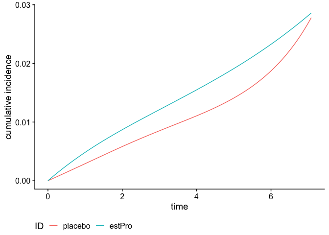

casebase is an R package for fitting flexible and fully parametric hazard regression models to survival data with single event type or multiple competing causes via logistic and multinomial regression. Our formulation allows for arbitrary functional forms of time and its interactions with other predictors for time-dependent hazards and hazard ratios. From the fitted hazard model, we provide functions to readily calculate and plot cumulative incidence and survival curves for a given covariate profile. This approach accommodates any log-linear hazard function of prognostic time, treatment, and covariates, and readily allows for non-proportionality. We also provide a plot method for visualizing incidence density via population time plots.
Installation
You can install the released version of casebase from CRAN with:
install.packages("casebase")And the development version from GitHub with:
# install.packages("devtools")
devtools::install_github("sahirbhatnagar/casebase")Vignettes
See the package website for example usage of the functions. This includes

Quickstart
This is a basic example which shows you some of the main functionalities of the casebase package. We use data from the estrogen plus progestin trial from the Women’s Health Initiative (included in the casebase package). This randomized clinical trial investigated the effect of estrogen plus progestin (estPro) on coronary heart disease (CHD) risk in 16,608 postmenopausal women who were 50 to 79 years of age at base line. Participants were randomly assigned to receive estPro or placebo. The primary efficacy outcome of the trial was CHD (nonfatal myocardial infarction or death due to CHD).
library(casebase)
#> See example usage at http://sahirbhatnagar.com/casebase/
library(visreg)
library(splines)
data("eprchd")Population Time Plots
We first visualize the data with a population time plot. For each treatment arm, we plot the observed person time in gray, and the case series as colored dots. It gives us a good visual representation of the incidence density:

Fit a Smooth Hazard Model
We model the hazard as a function of time, treatment arm and their interaction:
eprchd <- transform(eprchd,
treatment = factor(treatment, levels = c("placebo","estPro")))
fit <- fitSmoothHazard(status ~ treatment*ns(time, df = 3),
data = eprchd,
time = "time")
summary(fit)
#> Fitting smooth hazards with case-base sampling
#>
#> Sample size: 16608
#> Number of events: 324
#> Number of base moments: 32400
#> ----
#>
#> Call:
#> fitSmoothHazard(formula = status ~ treatment * ns(time, df = 3),
#> data = eprchd, time = "time")
#>
#> Coefficients:
#> Estimate Std. Error z value Pr(>|z|)
#> (Intercept) -5.86338 0.29756 -19.705 < 2e-16 ***
#> treatmentestPro 0.65749 0.37542 1.751 0.0799 .
#> ns(time, df = 3)1 -0.41771 0.36175 -1.155 0.2482
#> ns(time, df = 3)2 0.80356 0.72806 1.104 0.2697
#> ns(time, df = 3)3 1.37487 0.34356 4.002 6.29e-05 ***
#> treatmentestPro:ns(time, df = 3)1 0.06151 0.48825 0.126 0.8997
#> treatmentestPro:ns(time, df = 3)2 -1.40446 0.93844 -1.497 0.1345
#> treatmentestPro:ns(time, df = 3)3 -1.10495 0.48794 -2.265 0.0235 *
#> ---
#> Signif. codes: 0 '***' 0.001 '**' 0.01 '*' 0.05 '.' 0.1 ' ' 1
#>
#> (Dispersion parameter for binomial family taken to be 1)
#>
#> Null deviance: 3635.4 on 32723 degrees of freedom
#> Residual deviance: 3614.1 on 32716 degrees of freedom
#> AIC: 3630.1
#>
#> Number of Fisher Scoring iterations: 7Since the output object from fitSmoothHazard inherits from the glm class, we see a familiar result when using the function summary.
Time-Dependent Hazard Function
The treatment effect on the hazard is somewhat difficult to interpret because of its interaction with the spline term on time. In these situations, it is often more instructive to visualize the relationship. For example, we can easily plot the hazard function for each treatment arm:
plot(fit, hazard.params = list(xvar = "time", by = "treatment"))
#> Conditions used in construction of plot
#> treatment: placebo / estPro
#> offset: 0
Time-Dependent Hazard Ratio
We can also plot the time-dependent hazard ratio and 95% confidence band:
newtime <- quantile(eprchd$time,
probs = seq(0.01, 0.99, 0.01))
# reference category
newdata <- data.frame(treatment = factor("placebo",
levels = c("placebo", "estPro")),
time = newtime)
plot(fit,
type = "hr",
newdata = newdata,
var = "treatment",
increment = 1,
xvar = "time",
ci = T,
rug = T)
Cumulative Incidence Function (CIF)
We can also calculate and plot the cumulative incidence function:
smooth_risk <- absoluteRisk(object = fit,
newdata = data.frame(treatment = c("placebo", "estPro")))
plot(smooth_risk, id.names = c("placebo", "estPro"))
Class structure
The casebase package uses the following hierarchy of classes for the output of fitSmoothHazard:
The class singleEventCB is an S3 class, and we also keep track of the classes appearing below. The class CompRisk is an S4 class that inherits from vglm.
Credit
This package is makes use of several existing packages including:
-
VGAMfor fitting multinomial logistic regression models -
survivalfor survival models -
ggplot2for plotting the population time plots -
data.tablefor efficient handling of large datasets
Other packages with similar objectives but different parametric forms:
Citation
citation('casebase')
#> To cite casebase in publications use:
#>
#> Bhatnagar S, Turgeon M, Islam J, Saarela O, Hanley J (2022).
#> "casebase: An Alternative Framework for Survival Analysis and
#> Comparison of Event Rates." _The R Journal_, *14*(3).
#>
#> Hanley, James A., and Olli S. Miettinen. Fitting smooth-in-time
#> prognostic risk functions via logistic regression. International
#> Journal of Biostatistics 5.1 (2009): 1125-1125.
#>
#> Saarela, Olli. A case-base sampling method for estimating recurrent
#> event intensities. Lifetime data analysis 22.4 (2016): 589-605.
#>
#> If competing risks analyis is used, please also cite
#>
#> Saarela, Olli, and Elja Arjas. Non-parametric Bayesian Hazard
#> Regression for Chronic Disease Risk Assessment. Scandinavian Journal
#> of Statistics 42.2 (2015): 609-626.
#>
#> To see these entries in BibTeX format, use 'print(<citation>,
#> bibtex=TRUE)', 'toBibtex(.)', or set
#> 'options(citation.bibtex.max=999)'.Latest news
You can see the most recent changes to the package in the NEWS file
Code of Conduct
Please note that this project is released with a Contributor Code of Conduct. By participating in this project you agree to abide by its terms.